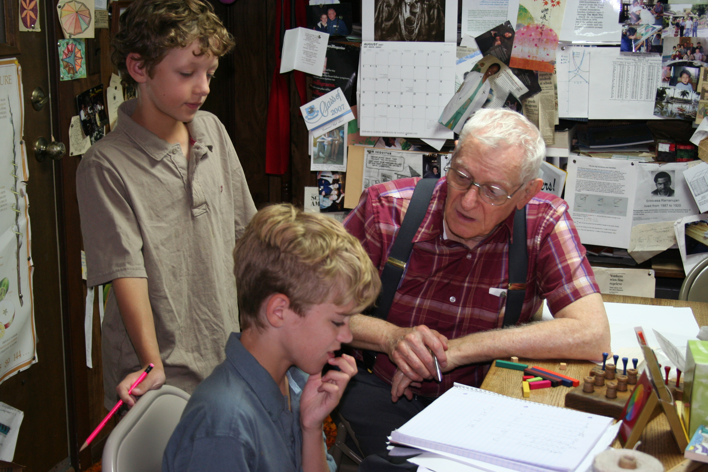
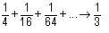
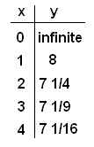
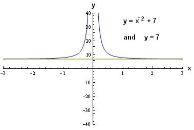

Jonty (autistic), and George work with Don

George standing, Jonty, and Don
George
He worked on these infinite series
Don's
Ch. 1 sample problems).
 He then
generalized to then Don gave him
|
Jonty
While I was doing the infinite series with George,
Maura was doing them with Jonty. After the first hour Jonty was upset with
Don, because he didn't get the attention from him as he wanted. Don
corrected that right away. Jonty could hear Don very well, didn't look
at him, but understood very well what he was asking. Maura drew the
pictures for Jonty, as George did , then would hold up
the blue board (one with nos., one with letters) or paper and Jonty would
respond by pointing to letters, symbols, and numbers for his responses.
|
George, Don, Jonty and Maura played Guess My Rule (see ch. 6 in Don's worksheet book). Don made up an easy one, like 2x+3=y which both boys figured out quickly. Then George made up this one, Don giving George 0 for the input x. George wasn't sure of his output and said 0 (later changed to infinite), then 8 for 1, 7 1/4 for 2 and 7 1/9 for 3, putting these in the table at the left below. Jonty very quickly, before Don, told George what his rule was!! Then George graphed his rule at the right

They talked about the graph: there was a vertical asymptote at x=0, or the y-axis.. as the |x| got smaller, the graph approaches the y-axis. As |x| gets bigger, the graph approaches 7. 7 is a horizontal asymptote. [One of Don's rule in teaching is if you let the student make up the problem, it will be much harder than the teacher gives!]
Jonty made up the rule x4 + 1 = y and George figured that out.
Don got Jonty graphing x2=y with Maura's help. He saw the pattern as one starts at (0,0), then moves 1 to the right, 1 up to (1,1), then from (1,1), 1 right and 3 up to (2,4). This pattern continues going up odd numbers and the sum of the first 3 odd numbers 1+3+5= 32 = 9 and Jonty correctly predicted the sum of the first 10 odd numbers = 102 =100. Then Don had Jonty find the equation of the graph of the parabola that a) moved the original up 2 units (he got x2 + 2 = y); b) moved the original to the right 3 units (after some work, he got (x - 3)2 = y ); c) move the original parabola right 3 and up 2 (vertex at (3,2)- and he got (x - 3)2 + 2 = y); and d) made the original skinnier (3x2 = y); and e) reflect the original in the x-axis ( -x2 = y). These last two were done on the way home!
Don also had Jonty, with Shawna's help (she was the caregiver and great help with Jonty), filled plastic containers with water to show that the volume of a pyramid is 1/3 the volume of a cube with same base and height and the volume of a cone is 1/3 the volume of a cylinder with same base and height.
Great work, everyone!!
Before they left, the boys wanted a picture with Don and his MATHMAN license plate.

The night before they left for home, Don received this email from Maura:
Hi Don: I want to
thank you and Marilyn and your family for being so nice to us while we were
here. I honestly never tasted better Chinese food than that at the Rainbow
Gardens- all courtesy of you and Marilyn. The boys (and Shawna and I
!) learned so much in the short time we had and we all enjoyed it so much.
Your work with kids and your book have no doubt changed hundreds if not
thousands of people's lives. If possible, I think both my boys love math
even more after having worked with you.